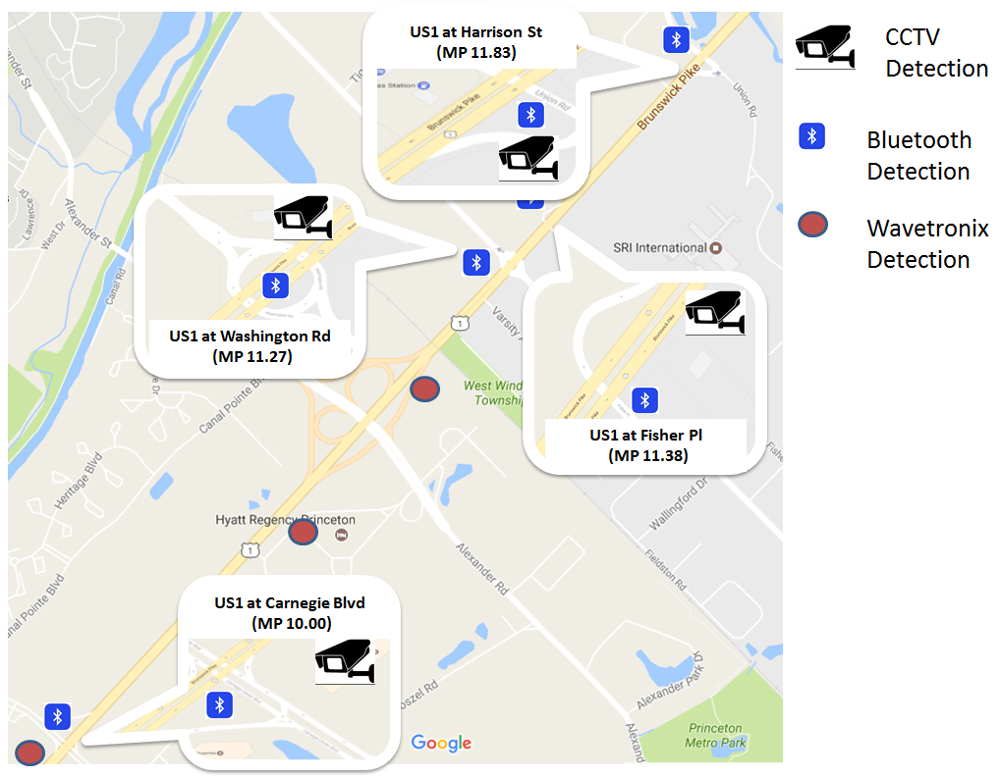
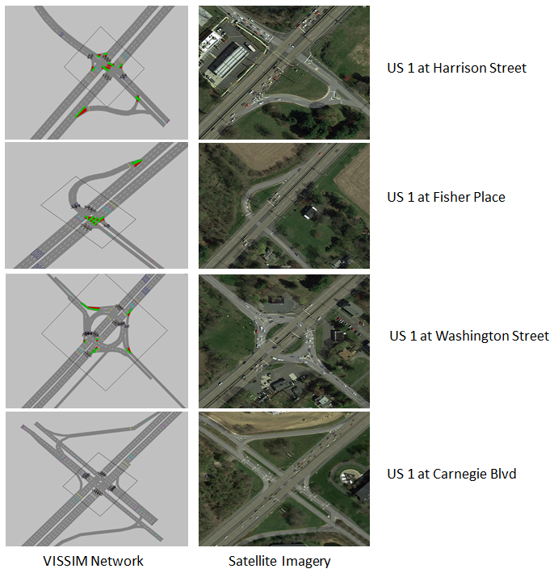
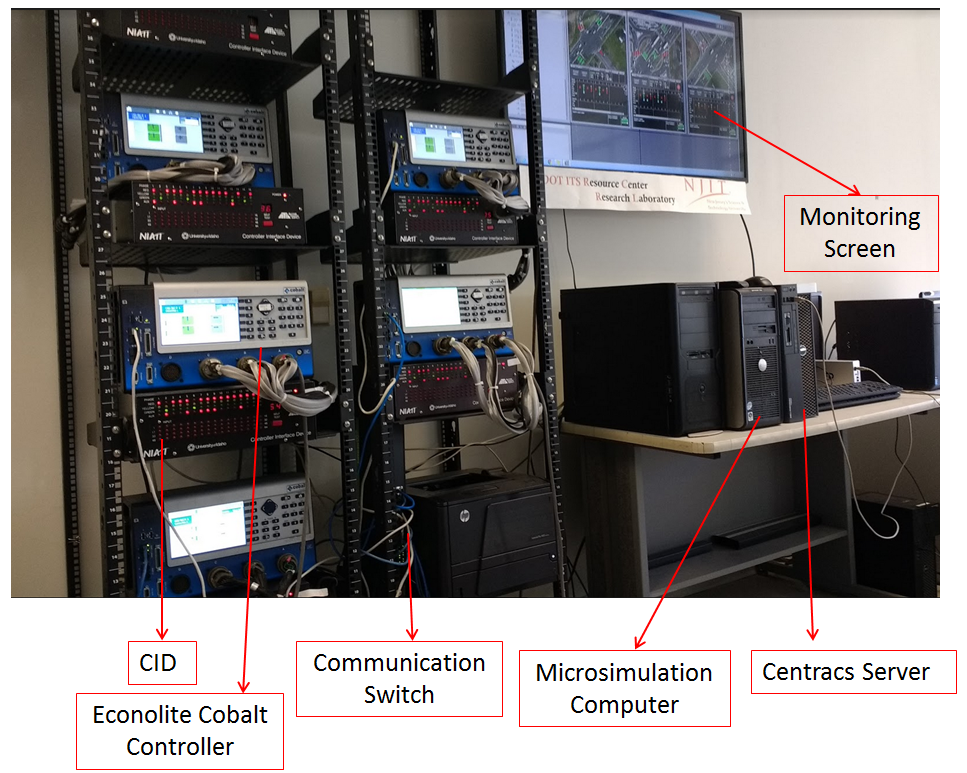
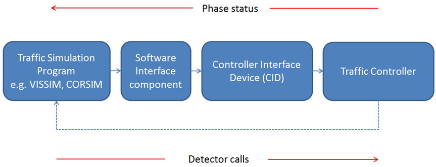
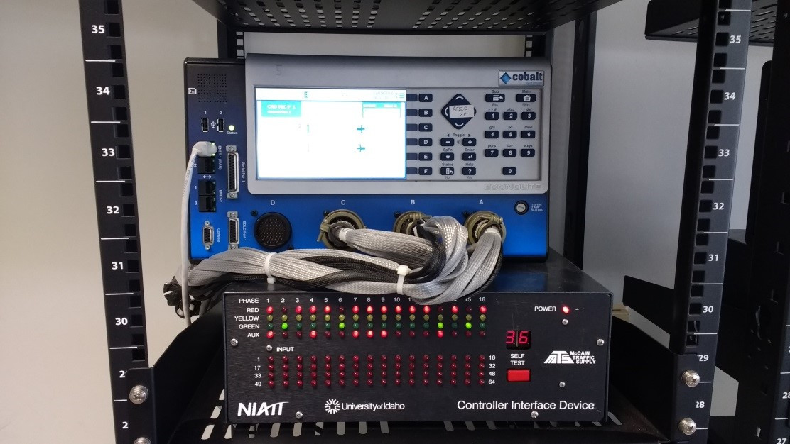
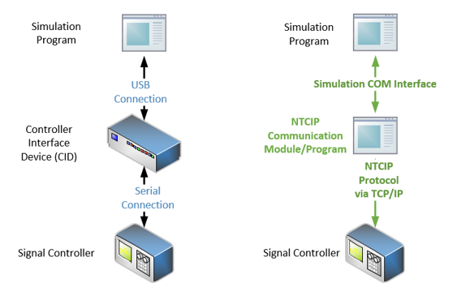
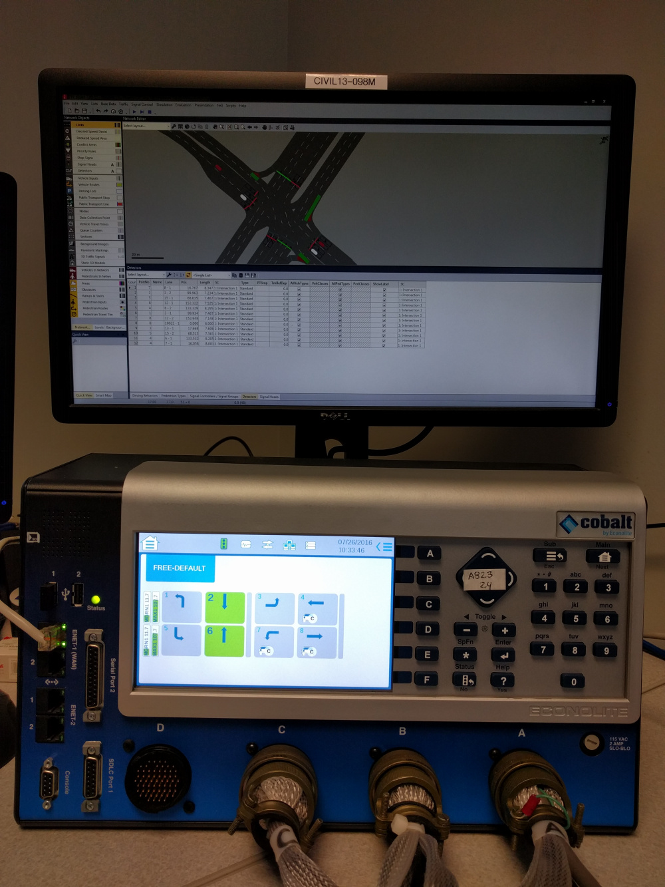
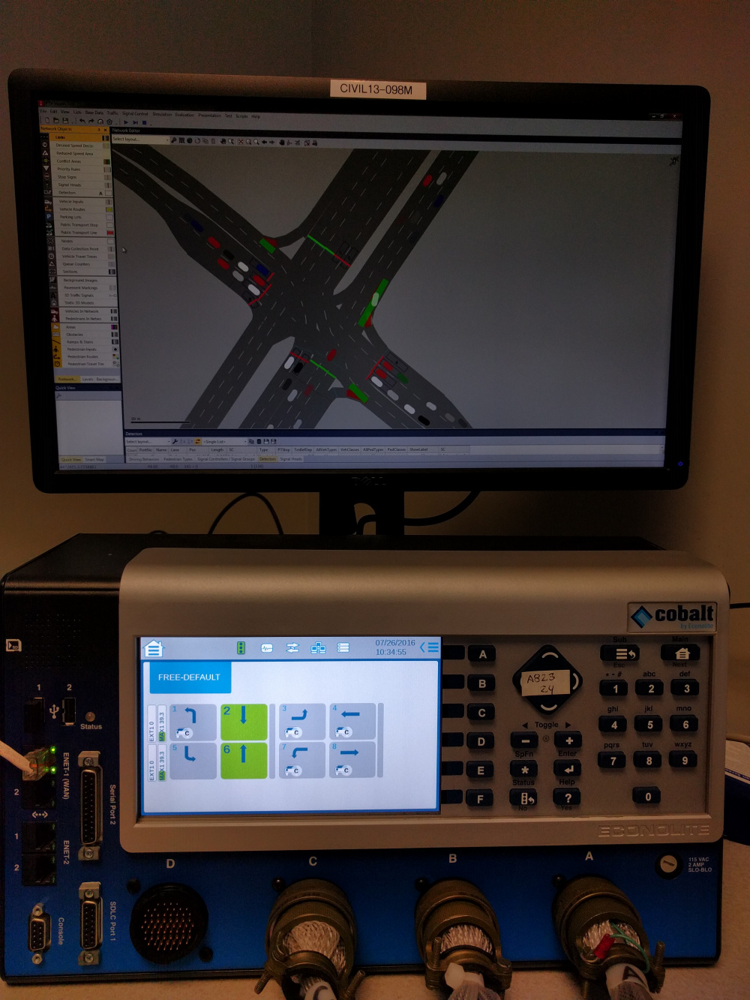
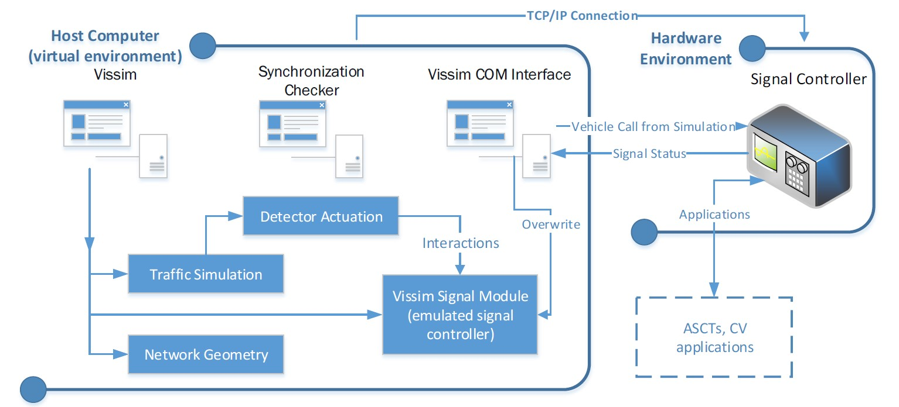

Hardware-in-the-loop simulation (HILS), as a type of real-time simulation technique, can enhance the testing qualify of the simulation by factoring in the complexity of a component hardware
HILS helps to expand the scope of the test, even to the realm where testing condition could be deemed unsafe or critical (e.g., device malfunction, loss of communication)
By using the actual controller, certain proprietary Adaptive Traffic Control Systems could be evaluated on a virtual environment with a wide spectrum of traffic conditions, thus improving the test quality
Research Objectives
To develop a HILS system that allows real-time assessment of complex traffic control systems using high-end signal controllers and traffic management tools
To evaluate the feasibility of using NTCIP protocol for HILS for modern signal controller
To assess the effectiveness of different signalization setups using microscopic simulation to replace the real-world traffic conditions
Research Approach
Evaluation of ATCS
Four Econolite Cobalt ATC controllers, along with controller interface devices (CID), were used at each intersection in the US-1 corridor.
The Centracs Adaptive System is implemented on the HILT environment where the virtual network in Vissim was built as per field condition (e.g., traffic condition, sensor layout)
The selected network was calibrated by traffic volume and travel time data with Quasi Monte Carlo algorithm



CID-free HILS by using NTCIP protocol
The Controller Interface Device (CID), developed by the National Institute for Advanced Transportation Technology (NIATT), communicate with any NEMA TS2 controller through a RS485 serial data line communication (SDLC) interface.
CIDs are typically used to convert the signal, making it communicable between simulation program and signal controllers, as signal controller are not designed to interface with simulation software (e.g., Vissim, AIMSUN)


The National Transportation Communication for ITS Protocol (NTCIP) was developed to provide interoperability and interchangeability among traffic controllers and ITS devices.
The advantage of CID-free HILS
Less hardware redundancy
lower cost for scalability (in the absence of CID devices)
Less communication overhead, thus greater the feasibility of HILS



Proposed HILS framework for evaluating ASCT systems without a CID
HILS complements field test
HILS was used to complements the in-house personal intersection crossing mobile app (i.e., Virtual Guide Dog)